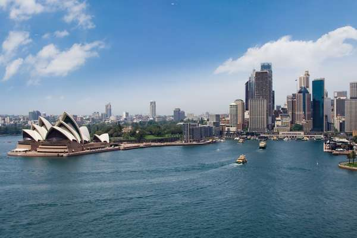

Сьогодні подорожі стали дуже доступні. В процесі того, як жителі різних країн все більше перетворюються в активних туристів, з'ясовується, що чудових місць, куди можна відправиться - не злічити.
Надихнути красивими куточками нашої планети і подумай, про яких подорожах ти мрієш. Напевно тут знайдеться місце, яке приверне саме тебе.
Барселона. Місто сонця, фарб і чарівництва. Без зайвої скромності можна сказати, що це — одна з головних скарбниць Іспанії. З цієї статті ви дізнаєтеся, на що подивитися і куди піти в Барселоні.
Рим - це "вічне місто", яке варто відвідати. Подорож до Італії неможливо уявити без відвідування Риму! Кажуть, що 90% світового мистецтва зосереджено в Італії, а 90% італійських шедеврів перебуває саме в Римі. До сих пір існує приказка, що всі дороги ведуть до Риму, але в імперські часи воно так і було! Тому, якщо ви не знаєте, куди поїхати, то Рим - це найкраще рішення.
Нью-Йорк — один із найбільших у світі торговельно-фінансових центрів (Нью-Йоркська фондова біржа, транснаціональні корпорації); великий промисловий центр (одяг, поліграфія, транспортні засоби, продукти харчування) США та Північної Америки; конгломератом портів Нью-Йорк сполучений системою каналів з Великими Озерами; великий транспортний вузол (авіатранспорт)
Сідней є столицею штату Новий Південний Уельс. Місто було засноване у 1788 р. Артуром Філіпом, який прибув сюди на чолі Першого флоту, і було місцем заснування першого колоніального європейського поселення у Австралії.[4]
Місто побудоване на пагорбах, що оточують Порт-Джексон, який відоміший як Гавань Сіднея, де виділяються знаменита будівля Сіднейського оперного театру і міст Гарбор-Брідж. Внутрішні райони столичної агломерації оточені національними парками, а прибережні райони мають багато заток, річок і пляжів, у тому числі знаменитий пляж Bondi Beach. У місті багато відомих парків і садів, у тому числі Гайд-парк і Парк Століття, Королівський ботанічний сад, Австралійський ботанічний сад Маунт-Аннан і Китайський сад дружби.

Ріо-де-Жанейро - місто знамените своєю видовищною природою, святкуваннями карнавалу, самбою й іншою музикою, сонячними пляжами (такими як у Копакабана, Іпанема і Леблон), готелями, добродушним і гостинним стилем життя своїх мешканців. Серед найвизначніших пам'яток міста гігантська статуя Ісуса Спасителя (Cristo Redentor) на горі Корковаду, гора Цукрова голова з канатною дорогою, Самбодром — величезний центр парадів, що використовується впродовж Бразильського карнавалу, стадіон Маракана́, один з найбільших у світі. У Ріо-де-Жанейро розміщений найбільший лісовий масив всередині міста — ліс Тіжука (Floresta da Tijuca).